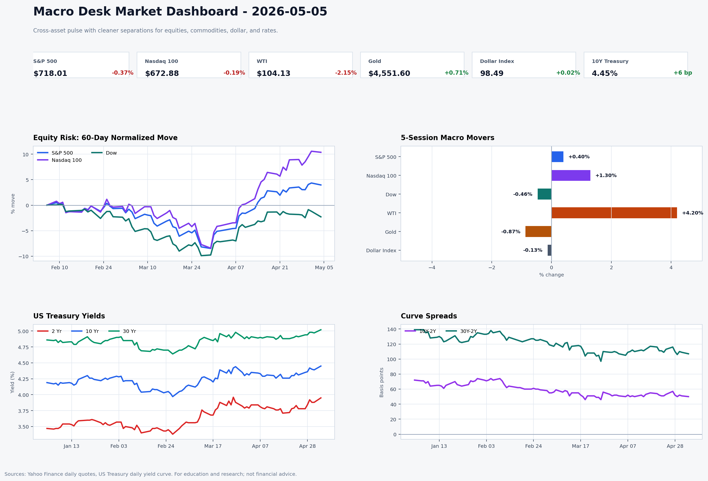
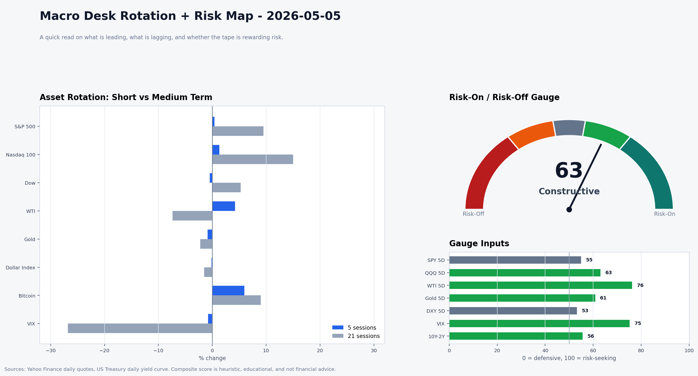

Daily Macro Brief — 2026-05-05
Status: U.S. cash markets open; oil has retraced slightly but remains elevated, and Treasury yields are consolidating after the late-April spike.
Executive Take
Equities slipped (Dow −1.1%) as Treasury yields ticked higher and oil cooled off from Friday’s surge—yet WTI still trades above $104, keeping the inflation story alive. Gold picked up a bit while the dollar and the 10-year yield edged up, reinforcing the view that the Fed’s April hold (3.50%–3.75%) keeps policy on a tight leash until jobs/CPI/PPI deliver a clearer signal. The market is now digesting a pullback in oil while monitoring whether the Middle East risk premium re-accelerates or retreats.
What Moved
- Equities: Macro Desk snapshot (S&P ETF 718.01, −0.37%; Nasdaq ETF 672.88, −0.19%; Dow ETF 489.56, −1.10%).
- Commodities & FX: WTI eased to $104.13 (–2.15% from the stormy reopen), gold rose to $4,551.60, and the dollar index edged higher to 98.49 (+0.02%).
- Credit/Rates: 2-year 3.95% (+7 bp vs 5/4), 10-year 4.45% (+6 bp), 30-year 5.02% (+5 bp); VIX dipped to 17.69 (–3.3%).
- 24/7 tape: Hyperliquid perps show BTC +2.3%, ETH +1.5%, TON +37.5% and PENGU +11.2% (funding still roughly neutral), highlighting that crypto risk appetite remains active even as cash risk assets wobble. See
macro-desk/data/2026-05-05-hyperliquid-24-7.csvfor details.
Why It Matters
- Oil still holds a risk premium because Reuters reports the U.S.-Iran standoff keeps the Strait of Hormuz threat on the table; the risk premium was enough to drag Asian stocks lower even as futures tried to rebound on Tuesday. Reuters: "Shares falter, oil prices stay elevated as US-Iran hostilities ramp up" (May 5, 2026).
- Treasury yields have entered a technical consolidation after the sharp April climb; Reuters’ “Mapping the Market” highlighted that the 10-year sits in a tight range and could extend the move higher if demand for safe assets eventually ebbs while oil remains sticky. Reuters: "Mapping the Market: US yields are forming pattern" (May 5, 2026).
- Gold’s bounce looks like profit-taking on the overnight pullback plus flight-to-safety money; it now competes with the dollar/10-year to gauge whether sticky energy costs keep the Fed from easing. TradingEconomics gold data.
Watch Next
1. May 8, 08:30 ET: BLS Employment Situation (April)—payrolls, wages, and participation will either reassure or unsettle the Fed.
2. May 12, 08:30 ET: BLS CPI (April)—if the recent oil pullback shows up in headline/energy, that could give policy room.
3. May 13, 08:30 ET: BLS PPI (April)—upstream input inflation will clarify whether producer pressure is easing or still active.
One Chart Idea
Take the 5-session macro-movers panel from today’s dashboard (macro-desk/charts/2026-05-05-market-dashboard.png), overlay the 10Y–2Y spread, and add a small inset showing Hyperliquid BTC vs. TON moves, so readers can see whether the 24/7 crypto impulse is diverging from—and potentially leading—the cross-asset macro line.
Publish-Ready Short Post
Stocks dipped today as yields popped again and oil retraced from Friday’s high but stayed above $104. Gold got a little bid amid the risk-off tone, while the dollar and yields creep higher, reinforcing the Fed’s wait-mode stance. Asia markets also struggled after the U.S.-Iran tensions kept the Strait of Hormuz premium intact even as front-month crude eased slightly. With hyperliquid perps still hot (BTC +2.3%, TON +37%), the 24/7 tape shows risk is not yet capitulated; now the feeds turn to jobs (May 8), CPI (May 12), and PPI (May 13) for the next calibration point. Chart reference: Macro Desk dashboard (see charts/2026-05-05-market-dashboard.png).
Sources
macro-desk/data/2026-05-05-snapshot.csv(equities, commodities, yields, VIX).macro-desk/data/2026-05-05-hyperliquid-24-7.csv(Hyperliquid 24/7 tape data).macro-desk/charts/2026-05-05-market-dashboard.png(dashboard).- Reuters: Shares falter, oil prices stay elevated as US-Iran hostilities ramp up — https://www.reuters.com/world/china/global-markets-global-markets-2026-05-05/.
- Reuters: Mapping the Market: US yields are forming pattern — https://www.reuters.com/markets/us/global-markets-technicals-graphic-2026-05-05/.
- TradingEconomics: Gold price snapshot May 5, 2026 — https://tradingeconomics.com/commodity/gold.
- BLS Employment Situation release schedule — https://www.bls.gov/schedule/news_release/empsit.htm.
- BLS CPI release schedule — https://www.bls.gov/schedule/news_release/cpi.htm.
- BLS PPI release schedule — https://www.bls.gov/schedule/news_release/ppi.htm.